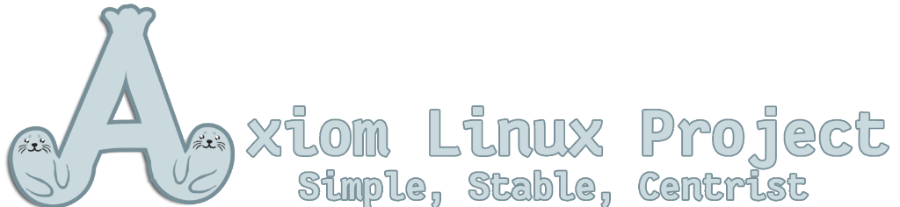

axiom-mirror --list
axiom@pc:~$ list-iso-mirrors
[LATEST]
axiomlinux-CM3-amd64.iso
(2.6 GB)

Configure your system in a single profile. Rebuild, reproduce, and backup your software stack instantly, inspired by NixOS reproducibility.
Built for intermediate Linux enthusiasts and purists alike. Blends custom DIY configuration control with a clean, fully functional baseline desktop environment.
Native integration for running isolated packages from any distribution inside lightweight, high-performance local containers under a unified command.
An independent passion project architected and programmed from scratch by a 13-year-old developer. Made by a coder, for coders.
Goal: Making Axiom functional, established, and leveled with regular distributions.
axiom-live-desktop from the live ISO.Goal: Implementing the unique, declarative, and containerized hybrid desktop architecture.
/etc/axiom/axiom.yaml to track local packages and flatpaks.axm apply to resolve package deltas and keyrings local-only.axm rollback to instantly revert package/config states.containers: block in axiom.yaml configurations.axm check) to validate YAML syntax and target additions safely.Hybrid Declarative Model:
+-----------------------------------+
| ELEVATED SYSTEM LAYER |
| (Declarative Apps, Containers) |
+-----------------------------------+
|
v
+-----------------------------------+
| STABLE DEBIAN BASE |
| (Simple, Rock-Solid) |
+-----------------------------------+
Goal: Refinement, hardening, and building out the distribution community.
Themed around distinct seal species (in order of release):